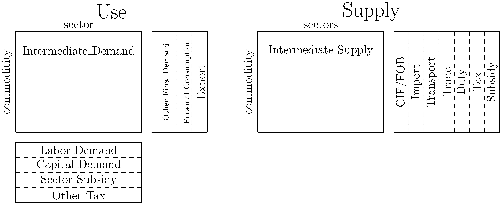
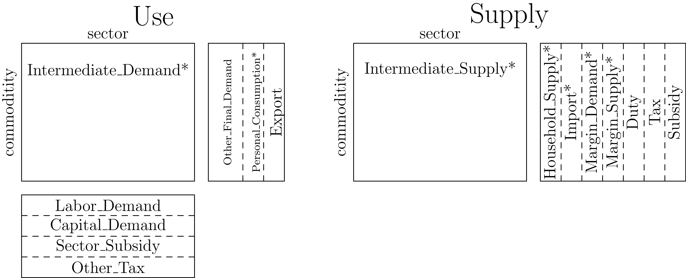

Data Build Process
The only necessary data for the national model is the BEA Supply and Use tables. These tables have the following structure:

Note that the Other_Final_Demand region is a collection of multiple columns. However, in the national model we don't distinguish between the values so they are all treated as a single category. The data does not get aggregated together, retrieving that parameter returns all the raw data.
Coming from the BEA, this data is not suitable for use in our CGE models. In the following sections we will outline the steps taken to transform the raw data into a format suitable for our models.
Flip Sign of Use
The first step to flip the sign of all the values in the Use table. We consider inputs to be negative.
Reverse Negative Flows in Intermediate Tables
We want all values in the Intermediate tables to have the same sign as their flow. For example, in the 2023 Use table the sector 111CA (Farms) and commodity Used (Scrap, Used and secondhand goods) has a value of 18. We expect all values in the Use table to be negative. Note, this is after flipping the sign from the previous step. In the Use table that value is -18.
To solve this issue we reverse the flow of good with the wrong sign in Intermediate_Demand and Intermediate_Supply. The 18 moves from Use to be 18 in Supply in the same commodity/sector.
Redistribute CIF/FOB Adjustments
The CIF/FOB column is used to adjust Transport margins and Imports. The CIF/FOB values get added to Imports values on insurance commodities and Transport on non-insurance commodities. In the Summary-level table their is only a single insurance commodity, 524 (Insurance carriers and related activities). In the detailed table there are three:
524113(Direct life insurance carriers)5241XX(Insurance carriers, except direct life)524200(Insurance agencies, brokerages, and related activities)
The CIF/FOB column is then removed from our data.
Disaggregation of Trade and Transport
The two marginal columns Trade and Transport are transformed into two parameters, Margin_Demand and Margin_Supply. The positive values from Trade and Transport become Margin_Demand and the negative values become Margin_Supply. We do not adjust the signs of these values, Margin_Supply acts like an input which means it should be negative.
We also create a new set margin which includes the NAICS codes for Trade and Transport. This set is the column domain of both Margin_Demand and Margin_Supply.
Personal_Consumption and Household_Supply
The Personal_Consumption column has a mix of positive and negative values. This could should only contain negative values, as it is on the input side. The Household_Supply column is created from the positive values.
Sector_Subsidy and Subsidy
The Sector_Subsidy is a new addition to the Supply/Use framework. It was introduced post-Covid to account for the large subsidies provided to various sectors of the economy. Direct from the BEA, this row is positive and it should be negative. That means in our final data, this row should be positive, so we re-flip the sign.
This is in contrast to the Subsidy column which, direct from the BEA, is negative. Which is the correct sign so we make no adjustments.
The Final Data Structure
The final WiNDC National parameters are given by:

These are the actual parameters in the WiNDC National dataset. This means if you want to extract Export, you can run
table(summary, :Export)and get the corresponding values from the dataset.